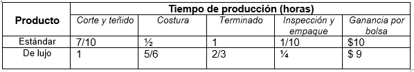

2.3.1 Formulación del modelo matemático: determinación del objetivo, variables, restricciones y la función objetivo.
La formulación de un modelo de PL implica desarrollar un modelo matemático para representar al problema administrativo. En consecuencia, para formular un problema, es necesario entender a cabalidad el problema administrativo que se enfrenta. Una vez que éste se entiende, se puede comenzar a desarrollar el enunciado matemático del mismo [10].
La construcción del modelo matemático comenzará por definir las variables de decisión, que representan las variables sobre las que el decisor tiene control y que se suponen continuas. Se representarán algebraicamente en la forma X1, X2,… o bien con nombres específicos que faciliten su identificación. Representarán productos o bienes a producir, almacenar o vender, disponibilidad o adquisición de materias primas,…Puede haber problemas en los que resulta imposible la definición de alternativas de variables y una elección cuidadosa será determinante para la posterior resolución del modelo construido, que consistirá en la asignación a éstas de unos determinados valores numéricos.
El siguiente paso será el reconocimiento de las restricciones y su construcción. Las restricciones representan limitaciones o requisitos y definirán las decisiones admisibles, es decir, la región factible del problema. Podrán ser de la forma de desigualdades y/o igualdades, según representen el deseo de no exceder cierto valor específico (<=), no descender por debajo de tal valor (>=) o ser igual a él (=).
Finalmente, se construirá la función objetivo, que representará alguna cantidad que desea maximizar el decisor (beneficio, renta, eficacia, producción,…) o bien minimizar (costo, tiempo, inventario,…).
Formulación del problema:
Es el proceso de traducir la declaración verbal del mismo en una declaración matemática. La declaración matemática del problema se denomina modelo matemático. Para tal efecto, se propone: definir las variables de decisión, el objetivo del problema, las restricciones estructurales y establecer las condiciones técnicas. Para una mejor compresión de la formulación del problema, se comentará cada uno de los elementos citados arriba [11].
Función objetivo:
En cualquier problema de programación lineal, el que toma las decisiones desea maximizar (por lo regular, los ingresos o las utilidades) o reducir al mínimo (casi siempre, los costos) algunas funciones de las variables de decisión. La función que se desea maximizar o minimizar recibe el nombre de función objetivo [12].
Por ejemplo:
Z=3x_1 + 2x_2 +...+ 5x_n. Esta función se llama función objetivo.
Alternativas:
Deben existir cursos de acción alternativos entre los cuales se pueda elegir. Por ejemplo, si una compañía fabrica tres productos diferentes, la administración puede utilizar la programación lineal para decidir cómo asignar entre ellos sus limitados recursos de producción (de personal, maquinaria y así sucesivamente). ¿Deberá dedicar toda la capacidad de manufactura a fabricar sólo el primer producto, deberá producir cantidades iguales de cada uno de ellos o deberá asignar los recursos en alguna otra proporción? [13].
Restricciones estructurales:
Representan los diferentes requisitos que debe cumplir cualquier solución para que pueda llevarse a cabo. En cierta manera, son las limitaciones en los valores de los niveles de las diferentes actividades (variables).
Condiciones técnicas:
Este apartado establece que todas las variables deben tomar valores no negativos. Lo anterior obedece a diversas razones técnicas. Además en la mayoría de las formulaciones reales de PL, las variables resultan ser no negativas [14].
Variables de decisión:
En cualquier modelo de PL, las variables de decisión deben describir por completo las decisiones que se tienen que tomar [15].
PROBLEMAS:
Ejemplo 1.
Una planta que fabrica productos metálicos especializados ha descontinuado recientemente las ventas de una línea de productos no rentables. Esto produjo un exceso de capacitación de producción que se puede usar para fabricar mayor cantidad de las demás líneas. La gerencia de la empresa ha identificado tres productos existentes rentables y desea saber cómo se debe asignar la nueva capacidad entre estos tres, para incrementar sus utilidades tanto como sea posible.
Todas las hojas de ruta de producción para estos tres productos especifican procesamiento en máquinas fresadoras de control numérico, un torno y una esmeriladora. El tiempo disponible ahora para estas máquinas es el siguiente:
Tiempo disponible
(Horas de máquina por semana)
Máquina con CN
520 horas
Torno
210 horas
Esmeriladora
125 horas
Las hojas de ruta también proporcionan la siguiente información de tiempo estándar (en horas de máquina por unidad)
Máquina
Producto 1
Producto 2
Producto 3
Máquina con CN
16
5
8
Torno
10
5
1
Esmeriladora
2
1
1
El departamento de ventas de la empresa pronostica que las ventas potenciales para los productos 1 y 2 exceden la tasa de producción máxima, pero que el potencial para el producto 3 está limitado a 50 unidades por semana. Al mismo tiempo, el departamento de ingeniería industrial ha pronosticado que, al volumen que quizá se llegará y los niveles de productividad estimados por la gerencia, la utilidad unitaria para los productos sería $45, $20 y $25, respectivamente [16].
1.- FORMULACIÓN DEL PROBLEMA:
a) PROBLEMA: Desconocer la cantidad de del producto 1, 2 y 3 que deben producirse cada semana.
b) OBJETIVO: Maximizar la ganancia o utilidad que la empresa obtenga por la producción.
c) ALTERNATIVAS:
- Producir únicamente el producto 1.
- Producir únicamente el producto 2.
- Producir únicamente el producto 3.
- Producir una mezcla de los tres productos.
d) RESTRICCIONES:
- Disponibilidad máxima de 520 horas de la máquina CN.
- Disponibilidad máxima de 210 horas del torno.
- Disponibilidad máxima de 125 horas de la esmeriladora.
- Se venden cuando mucho 50 unidades por semana del producto 3.
VARIABLES DE DECISIÓN:
X1 = Número de unidades a producir del producto 1.
X2 = Número de unidades a producir del producto 2.
X3 = Número de unidades a producir del producto 3.
2.- CONSTRUCCIÓN DE UN MODELO MATEMÁTICO PARA REPRESENTAR EL SISTEMA BAJO ESTUDIO:
Max Z = 45X1 + 20X2 + 25X3
s.a
16X1 + 5X2 +8X3 <= 520 horas máquina CN
10X1 + 5X2 + X3 <= 210 horas torno
2X1 + X2 + X3 <= 125 horas esmeriladora
X3 <= 125 ventas del producto 3
X1, X2, X3 >= 0
Ejemplo 2.
La compañía Par es un pequeño fabricante de equipo y suministros para golf. El distribuidor de Par cree que existe un mercado tanto para una bolsa de golf de precio moderado, denominada modelo estándar, como para una bolsa de golf de precio elevado, denominada modelo de lujo. El distribuidor está tan confiado en el mercado que, si Par puede hacer bolsas a un precio competitivo, el distribuidor comprará todas las bolsas que Par pueda fabricar durante los siguientes tres meses. Un análisis cuidadoso de los requerimientos de manufactura dio como resultado la siguiente tabla, que muestra los requerimientos de tiempo de producción para las cuatro operaciones de manufactura requeridas y la estimación hecha por el departamento de contabilidad de la contribución a la ganancia por bolsa.

Elaboración propia
El director de manufactura estima que dispondrán de 630 horas de tiempo de corte y teñido, 600 horas de tiempo de costura, 708 horas de tiempo de terminado y 135 horas de tiempo de inspección y empaque para la producción de bolsas de golf durante los siguientes tres meses.
Si la compañía desea maximizar la contribución a la ganancia total, ¿cuántas bolsas de cada modelo debería fabricar?
¿Qué contribución a la ganancia puede obtener Par con estas cantidades de producción?
¿Cuántas horas de tiempo de producción se programarán para cada operación?
¿Cuál es el tiempo de holgura en cada operación? [17].
1.- FORMULACIÓN DEL PROBLEMA:
a) PROBLEMA: Desconocer la cantidad que debe producirse de cada modelo de bolsa (estándar y de lujo).
b) OBJETIVO: Maximizar la ganancia o utilidad que la empresa obtenga por la producción de bolsas estándar y de lujo.
c) ALTERNATIVAS:
- Producir sólo bolsas estándar.
- Producir sólo bolsas de lujo.
- Producir ambos modelos.
d) RESTRICCIONES:
- Se dispondrán de 630 horas de tiempo de corte y teñido.
- Se dispondrán de 600 horas de tiempo de costura.
- Se dispondrán de 708 horas de tiempo de terminado.
- Se dispondrán de 135 horas de tiempo de inspección y empaque.
e) VARIABLES DE DECISIÓN:
X1 = Número de unidades a producir de bolsas estándar.
X2 = Número de unidades a producir de bolsas de lujo.
2.- CONSTRUCCIÓN DE UN MODELO MATEMÁTICO PARA REPRESENTAR EL SISTEMA BAJO ESTUDIO:
Max Z = 10X1 + 9X2
s.a
7/10X1 + 1 X2 <= 630 horas de corte y teñido.
½ X1 + 5/6 X2 <= 600 horas de costura.
1X1 + 2/3X2 <= 708 horas de terminado
1/10X1 + ¼ X2 <= 135 horas de inspección y empaque.